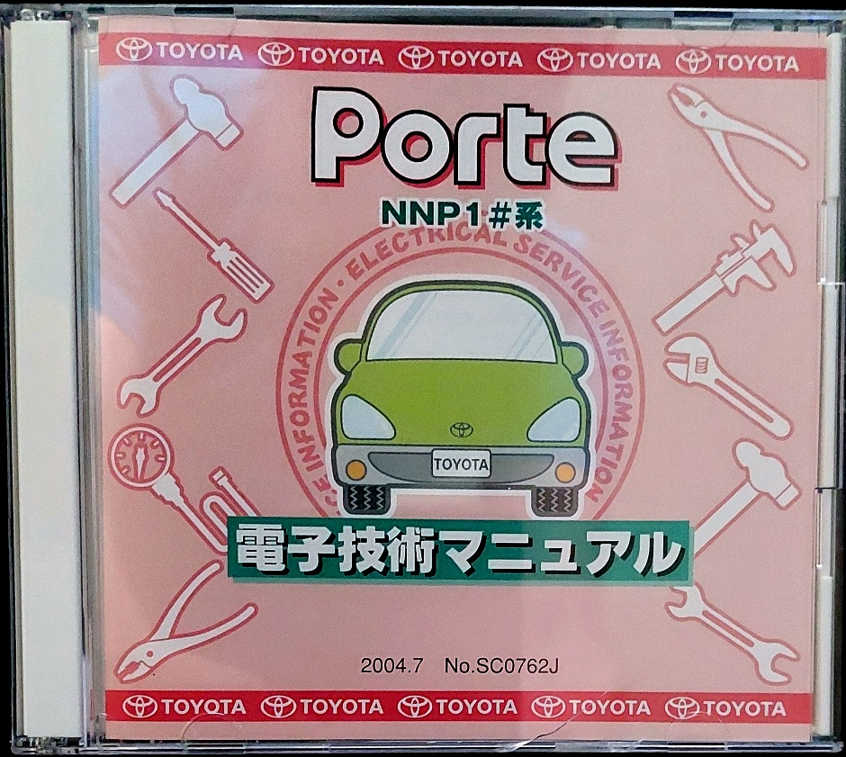
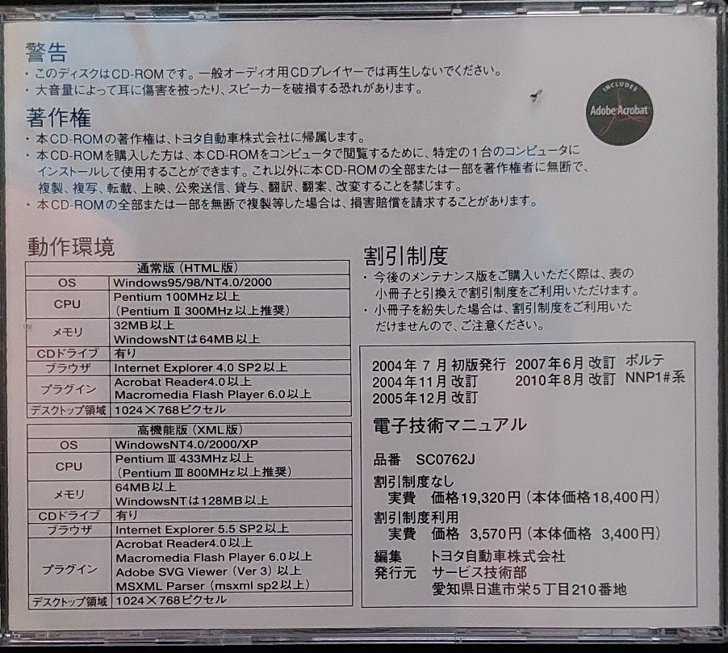

 
This is the service manual CD for the Toyota Porte NNP1 models, translated in bulk into English using Google Translate. This is provided as reference material for the English speaking mechanics and auto electricians who have to work on these cars that have been imported into other countries and would otherwise have no reference materials.
General information, diagnostics, etc.
All PDF files found on the CD. Mostly wiring diagrams, some specifications.
Software updates for the car's ECU, etc. Apparently requires Toyota specific hardware.